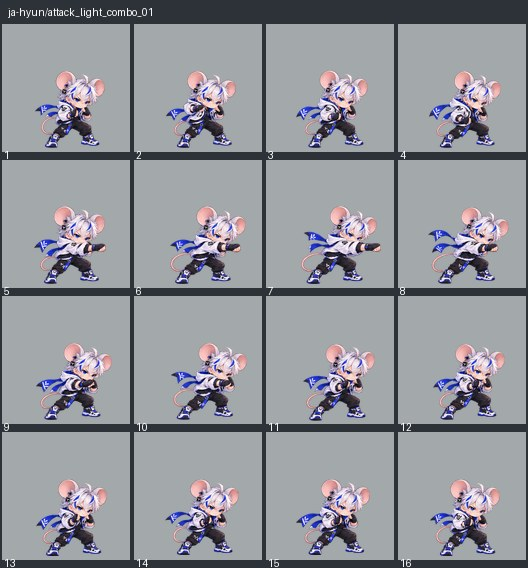
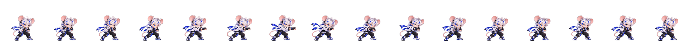
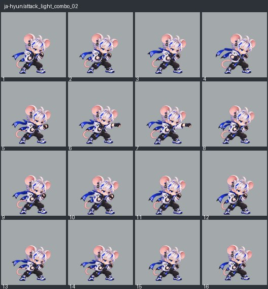
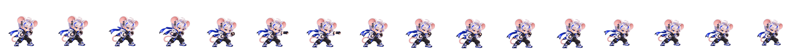
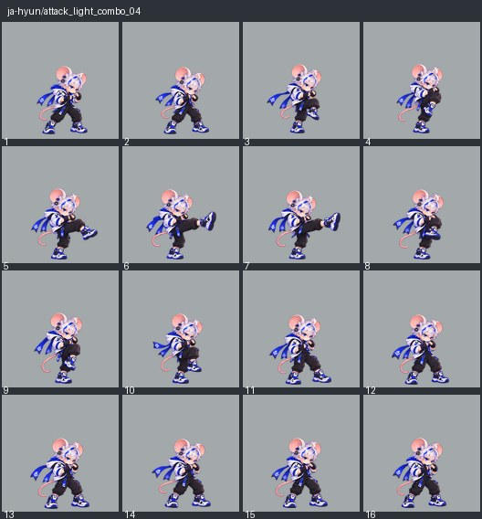
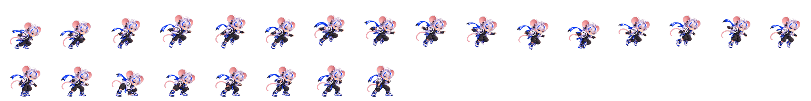
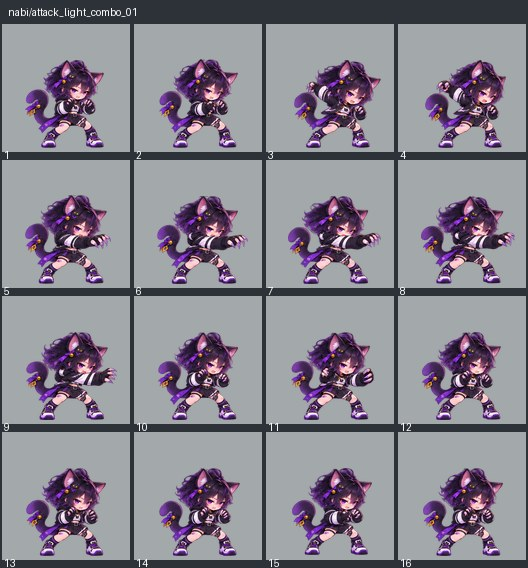
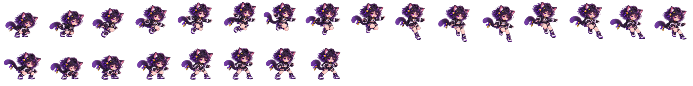
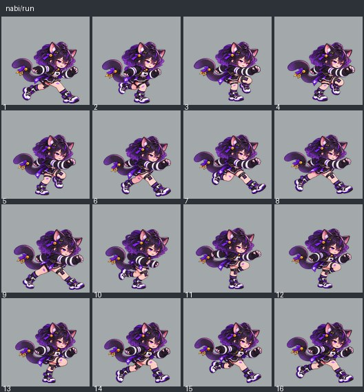

현재 표현 코드를 실행한 60Hz 검토 기록입니다. 비반복 상태는2초 강제 유지, 반복 모션은완전한2주기, 점프는 단계별 속도를 지정한 시험이며 실제 경기의 상태 수명과 구분합니다. 차지는 유지·해제 변형을 따로 선택하세요. 페이지 표시 자체가 QA 통과는 아닙니다.
ja-hyun/attack_light_combo_01
왼손 전방 펀치. 지상 약1과 약3은 같은 손이다. 준비→전방 단타→회복.
전체 16프레임


ja-hyun/attack_light_combo_02
반대 오른손 전방 펀치. 왼손 첫타와 사용 손을 구분한다.
전체 16프레임


ja-hyun/attack_light_combo_04
한 발로 버티고 다른 발을 전방으로 펼치는 강한 킥. 목도리 공격이 아닌 약4 다운 마무리.
전체 16프레임

ja-hyun/jump
상승·정점·하강을 구분한다. 실제 착지 전에는 지면을 딛는 착지 자세를 보이지 않는다.
전체 24프레임


ja-hyun/run
전진 달리기. 발 교대와 체중 이동이 이어지고 루프가 튀지 않는다.
전체 16프레임

nabi/attack_light_combo_01
왼손으로 전방 할퀴기. 첫 약공격 준비→앞으로 단타→회복.
전체 16프레임

nabi/attack_light_combo_02
두 손을 교차한 뒤 양쪽으로 벌려 X자 할퀴는 약3 다운 마무리.
전체 16프레임

nabi/attack_light_up
오른손을 아래에서 위로 할퀴는 지상 약2. 반대손은 방어하고 양손X나점프어퍼와구별한다.
전체 16프레임

nabi/jump
상승·정점·하강을 구분한다. 실제 착지 전에는 지면을 딛는 착지 자세를 보이지 않는다.
전체 24프레임


nabi/run
전진 달리기. 발 교대와 체중 이동이 이어지고 루프가 튀지 않는다.
전체 16프레임
